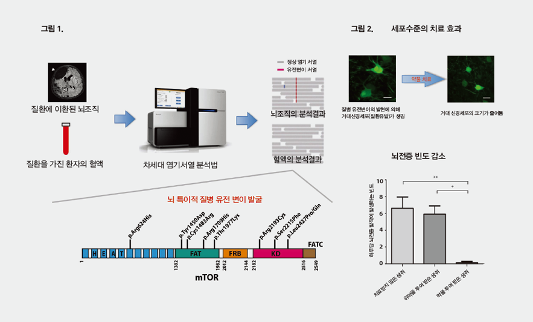

Report by Subjects
Report by Subjects
KAIST RESEARCH ACHIEVEMENTS
New therapy for
intractable epilepsy
Graduate School of Medical Science and Engineering Jeong Ho Lee
Summary
In 2020, Chul Soo Kim, a four-year-old boy, is suffering from medically refractory seizures that cannot be controlled by any currently available anti-seizure drug and may require invasive brain surgery to remove the affected part of the brain. The doctors scan Chul Soo's brain structure and examine his brain genome, discovering that a mutation in Chul Soo's brain is causing his seizures. So, the doctors administer a specific drug (mTOR inhibitor) that targets the mutation observed in Chul Soo's brain. Following the treatment, which involved no invasive surgery or side effects, Chul Soo is no longer plagued by seizures. He is lucky to have been born at a time when personalized and precision medical means are available for the very effective and safe treatment of epilepsy.
R&D Report
We have recently identified brain somatic mutations in the gene of mechanistic target of rapamycin (MTOR ) as the cause of Type II focal cortical dysplasia (FCDII), one of the most important and common inducers of intractable epilepsy, particularly in children. We propose a targeted therapy to reduce epileptic seizures by suppressing the activation of mTOR kinase, a signaling protein in the brain.
Focal cortical dysplasia (FCD) is a sporadic developmental malformation of the cerebral cortex that is characterized by the disorganized structure of the cerebral cortex or cytological abnormalities of the neurons in focally affected regions. FCD is an important cause of epilepsy that is difficult to control with available antiepileptic drugs and accounts for up to 50 percent of children undergoing epilepsy surgery. Although surgical resection of FCD renders approximately 60 percent of patients seizure-free, a significant number of FCD patients continue to suffer seizures. Due to the lack of understanding of the molecular genetic etiology, the development of novel and more effective FCD therapies remains elusive.

Fig 1. A schematic image showing how to detect brain-specific mutations using next-generation sequencing technology with blood-brain paired samples. A simple comparison of non-overlapping mutations between affected and unaffected tissues is able to detect brain specific mutations.
Fig 2. Targeted drug delivery can resolve the symptoms of focal cortical dysplasia, including cytomegalic neurons and intractable epilepsy.
1. This study provides the first evidence that brain somatic activating mutations in MTOR cause FCD.
2. This study provides a potential direction for the development of a targeted drug to treat intractable epilepsy in FCD patients.
3. mTOR inhibitors are already used in cancer treatments. Thus, if clinical trials for FCD patients are successful, drug-repositioning is possible in the near future.
Research Funding
ㆍThis research was supported by a grant from the Korean Health Technology R&D Project, under the Ministry of Health and Welfare; the Brain Research Program of the National Research Foundation of Korea (NRF), under the Ministry of Science, ICT and Future Planning; and the KAIST Future Systems Healthcare Project, under the Ministry of Science, ICT and Future Planning.
Research Outcomes
ㆍPaper : Brain somatic mutations in MTOR cause focal cortical dysplasia type II leading to intractable epilepsy, Nature Medicine, 21(4), 395-400 (Apr. 2015)
ㆍPatents : Korean patents: 1 registered, 5 pending; US patents: 2
ㆍDrug research : Clinical trial and genetic research with one global pharmaceutical company is now under way.